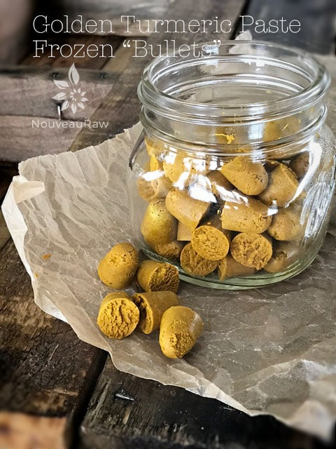
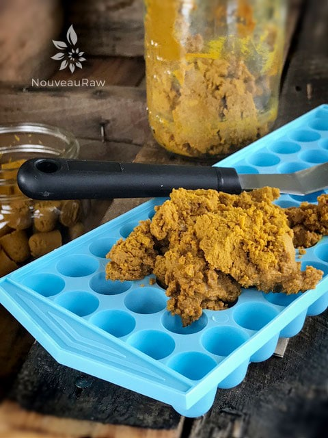
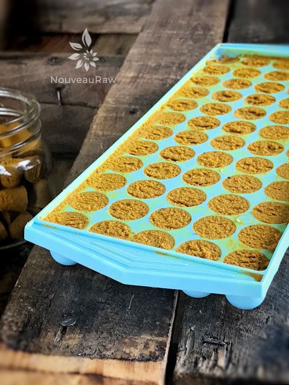
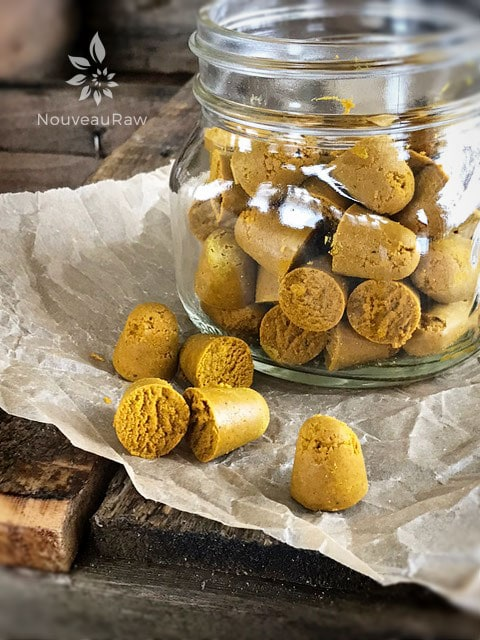

Golden Turmeric Paste

Where turmeric has been used as a spice in Indian recipes and as an Ayurvedic medicine for many thousands of years, it only became a known spice to me roughly three years ago. So, I am a little slow to the culinary boat.
Before that, the darn stuff scared me. I mean it scared me spice-less! Remember, my spice background (prior to raw) consisted of salt, pepper, and cinnamon. My holy trinity of spice. hehe
It’s difficult to describe the wonders of turmeric in just one recipe posting since it exhibits over 150 potentially therapeutic activities… shoot it is more than just a spice, it is a potent medicinal food if you ask me. I know you landed here to learn about to make Golden Turmeric Paste, but I couldn’t pass up the opportunity to share with you what I am learning about this fantastic food.
It is always my goal to make every bite count when I eat, so I tend to do a lot of research about what I put into my body. For an excellent read, I recommend that you visit this site to learn more about what turmeric can do for the body. Everyone talks about the fact that turmeric is amazing for inflammation (which it is), but I wanted to share something I learned that might also be new to you…
Turmeric and Bile
First of all, did you know that the liver roughly plays five-hundred functions in the body?! One that I wanted to point out is that it creates bile. Yea I know, we are talking about bile in a recipe post. I only share with you what I am passionate about and darn it! I am passionate about my liver.
“Bile is a fluid which is yellow-green in color and is produced by the hepatocytes – liver cells. It is stored in the gallbladder. The two main functions of bile are to remove waste products and break down fats from our food. It is the bile salts that actually perform the task of breaking down and absorbing fats. Bile is a digestive fluid produced by the liver. Several studies have been done to identify if turmeric can help in bile production regulation and thus digestion.
Curcumin is able to protect the bile duct by improving bile flow. This means the turmeric helps as a liver cleanser, rejuvenates liver cells, and helps the optimal functioning of the liver by preventing toxins and alcohol from being converted to harmful compounds that damage the liver and cause cirrhosis.” (1)
Black Pepper
There is a scientific reason why black pepper is added to this recipe, and that is to make turmeric highly bio-available. It is best to use fresh ground peppercorns because the essential oils in the pepper are more available. Black pepper has been found to increase curcumin’s bioavailability by 2,000 percent.
Coconut Oil
Because turmeric is fat-soluble, using coconut oil increases turmeric’s health benefits. By taking it with fat, it can be directly absorbed into the bloodstream through the lymphatic system thereby partially bypassing the liver. (1)
Why do I heat the paste?
It is shown that heat increases the solubility of curcumin (the primary active constituent in turmeric) by twelve times. It also calms down the bitterness of the turmeric making it much more palatable. (1,2,3)
When to Use Golden Paste
Start by blending up the perfect cup of Golden Milk, from there it can be added to warm soups, smoothies, salad dressings, stir into rice dishes, add to yogurts or even mix with a spoon of honey and gobble up. Be creative.
Preparation:
- When using/working/cooking with turmeric wear an apron. This spice will easily stain your clothing and countertops.
- In a stainless steel pot, heat the water and turmeric until it forms a thick paste, stirring and cooking for about 7 to 10 minutes. Do not boil; I kept it below 115 degrees.
- Remove from heat and add the black pepper and virgin coconut oil, using a whisk to fully mix in the coconut oil.
- Transfer the Golden Paste into a glass jar with a lid, and store in the refrigerator for up to 2 weeks. Anti-microbial Unrefined, Virgin Coconut oil will help slow spoiling.
- If the oil marbles in the jar, it just means it was not stirred enough at the end or the mix is a bit watery, but it will not affect the performance.
- Caution: Those who are pregnant, have gallstones, or are susceptible to kidney stones may want to moderate their turmeric consumption. Turmeric also acts as a blood thinner, for those on blood thinners or those who require surgery must stop taking any form of turmeric. Always check with your doctor. It can also react with diabetic medication and medication taken to reduce stomach acid.
- How much turmeric in a day? Click (here) to read more about it.
Amie Sue — I made too much!
If you find yourself in a position where you have a lot on hand or perhaps you are heading out on vacation and don’t want your paste to go bad… I have an idea for you that I have been doing… Freeze it in little “bullet” shapes. This is an ice cube tray, and each little bullet is a teaspoonful’s worth. Once frozen, pop them out of the tray and put them into a freezer-safe container.
This works absolutely perfectly. Now I can just reach into the freezer, pull out a little bullet, and pop it into the blender with my other drink makings.
-

-
Great way to always keep some on hand. They can easily be dropped into a smoothie or warm nut milk.
-

-
Spread the paste into the tray. Be sure to wear gloves and watch your surrounding area. Turmeric stains!
-

-
Make sure each cavity is full, then level off with a spatula.
-

-
Store in the freezer and remove one at a time as needed.
© AmieSue.com